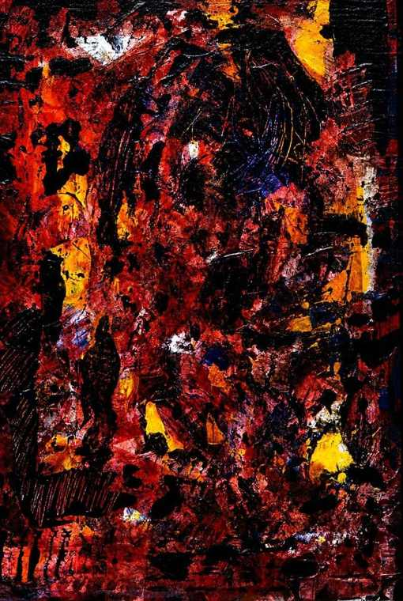
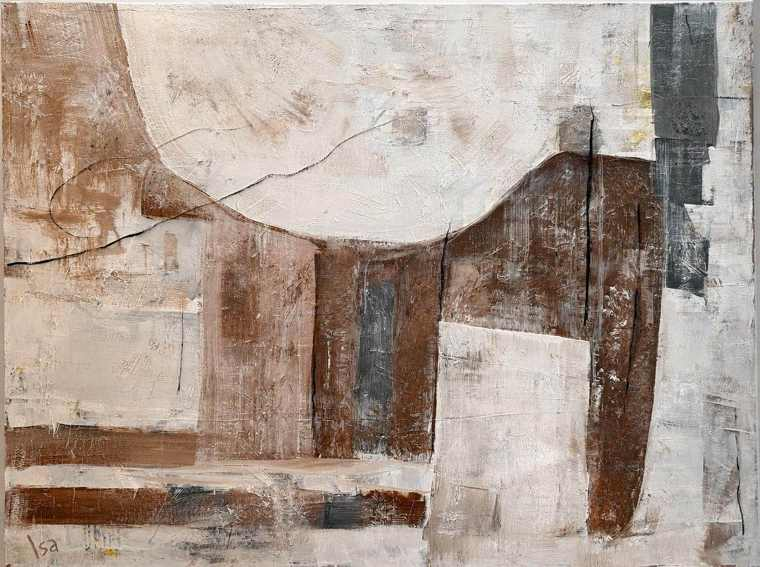
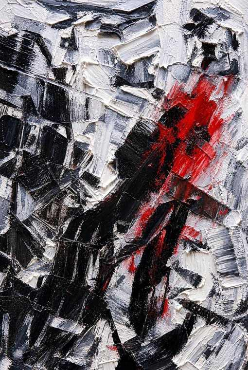
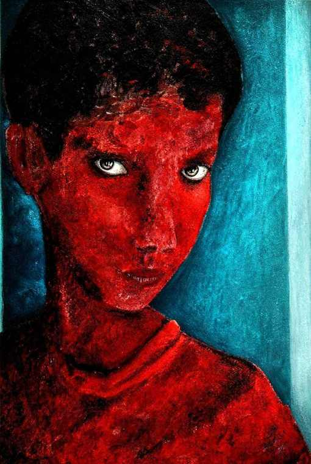
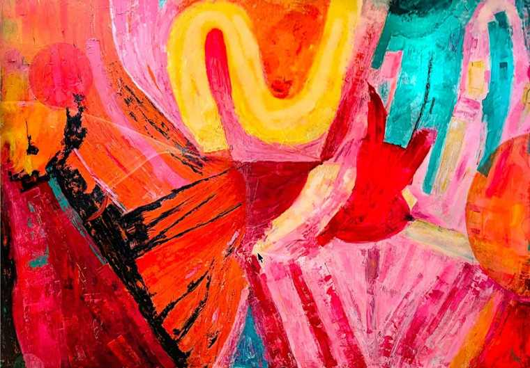
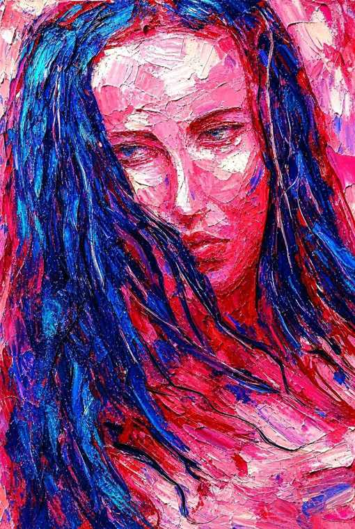
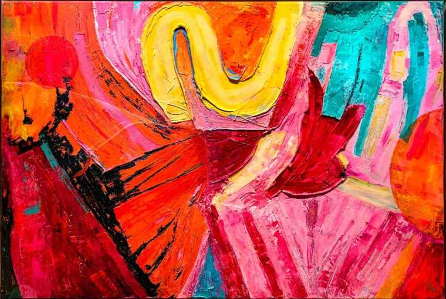
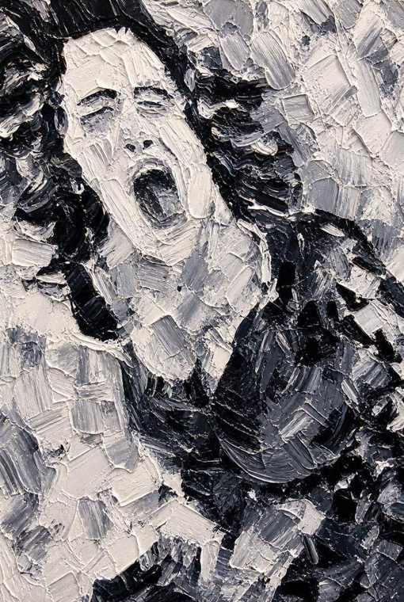

OTHER SELECTED WORKS / 01
Color. Texture.
Expression.
A selection of paintings from Isa Totah’s visual art practice. Each work has its own energy, palette, and point of view. Explore the details at your own pace.








Return to the main portfolio to explore film, directing, acting, and speaking.